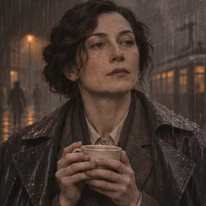
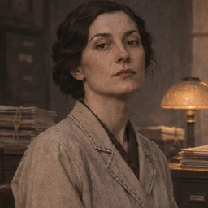
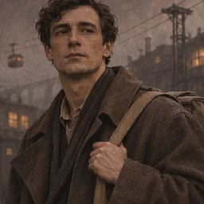
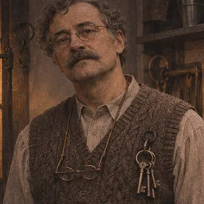

В промокшем спортивном квартале Мержи исчез катмен Матвей Клин. Его сестра просит найти живого человека, а владельцы залов уже ищут виновного в чужой смерти. След ведёт через столовые, ремонтные мастерские и комнаты, где взрослые люди пытаются придумать жизнь после ринга.

Если партия изменила план
Перед чтением вступления сверьте место героев, присутствующих людей и предметы с итогом прошлого вечера. Если условия встречи отпали, сыграйте последствия там, где находится партия. Событие по расписанию может произойти за кадром. Герои узнают о нём от тех, кто был на месте.
Вечер 4. Если разыскиваемый сам пришёл и хочет уйти
Сыграйте разговор здесь. Дайте человеку выбрать, какое сообщение можно унести заказчику и кому известен его адрес. Остальные вечера могут касаться долга и жилья, даже когда поиск человека уже закончен.
Группа отказалась от задания
За поиск Матвея по заказу квартала не берёмся. Вернуть взрослого человека в квартал не обещаем. Передадим ему запечатанную записку, если он согласится. Оставляем Вере запечатанную записку для условленной передачи. Ответ может вообще не прийти. Заказчик получает свою записку обратно либо подтверждение приёма, без чужого адреса.
Игроки раскрыли тайну раньше
Сверим записку без обратного адреса с личным ответом и попросим назвать безопасный способ подтверждения. Доступные свидетельства — Записка без обратного адреса, Ответ живого человека. Матвей ушёл добровольно и жив сейчас. Его прежнее письмо не даёт разрешения сообщить нынешний адрес. Спрашиваем Матвея, кому можно сообщить о его безопасности. Матвей ушёл добровольно. Обсуждаем помощь тем, кто остался в квартале, а местонахождение не раскрываем.
Партия уступила поле
У ворот отряд оттеснили; к дому в этот день пройти не удаётся. Оставляем посреднику обратный адрес и ждём ответа самого Матвея. Оставляем через согласившегося посредника свой адрес. Последнее слово за Матвеем, и встреча не считается состоявшейся.
Карман ведущего
Для игры без подготовки: что говорят люди, места в стороне от главной дороги и прохожие. Пометки о правде слухов — только для ведущего; сказанное за столом становится фактом мира, лишь когда вы его подтвердите.
Слухи
«Канатным квартал прозвали по старым мастерским: сто лет назад вдоль реки вили пеньку. Канаты у нас и теперь в почёте, только ринговые».
Правда. История квартала из описания места. Годится для первой минуты любого вечера; к делу Ирины отношения не имеет.
«В „После звонка“ сиди над стаканом кипятка хоть до закрытия. Никто не попросит освободить место, пока пальто не обсохнет».
Правда. Обычай столовой. Объясняет, почему здесь удобно говорить с людьми, не покупая им ужин; буфетчица слушать чужие разговоры не станет.
«Катмен ладонью кровь останавливает, будто заговорённый. Потому Матвея и звали к каждому бою, хоть на другой конец города».
Неправда. Суеверие болельщиков. Сверхъестественного в мире нет: у Матвея опыт, вата, вазелин и спокойные руки. Слух показывает, как его ценили во дворе, и ни в чём его не обвиняет.
«Раиса весь двор держит в кулаке. Кто ей не угодит, тот остаётся без вечернего боя, а там, глядишь, и без комнаты при зале».
Отчасти правда. Раиса правда пользуется зависимостью бойцов и давит, но «весь двор» и угроза жильём — преувеличение. К убийству Ирины она непричастна; не позволяйте слуху сделать её подозреваемой в нём.
«Лопнет у ринга канат — значит, в ту же неделю кто-то из квартала съедет без спроса. Примета старая, ещё от канатчиков».
Неправда. Безобидное суеверие, которое во дворе вспоминают после ухода Матвея. Никуда не ведёт и ни на кого не указывает.
«Лев в бане хранит чужие письма, ключи и получку до субботы. И ничего не читает — за это ему и несут».
Правда. Так Вера описывает Льва в первом вечере. Подсказывает уже открытый путь передачи просьб Матвею; адреса Лев не выдаёт ни за какие уговоры.
«После кабинета восстановления, говорят, на ноги встаёшь быстро, а вот из комнаты при зале съехать почему-то никак не выходит».
Отчасти правда. Намёк на продления зависимых комнат, которые герои проверяют во втором вечере по парным корешкам. Лечение там настоящее; нового доказательства слух не даёт и об убийстве ничего не говорит.
«В Доме самостоятельных комнат замки особые: дверь открывается, только если жилец сам захочет тебя впустить».
Неправда. Неверно понятый обычай: замки обычные, свои у каждого, а правило у входа просто велит жильцам самим решать, кого принимать. Доступ героев туда кончается у стола Ирины; слух напоминает об этой границе.
«Бек в молодости выиграл городской турнир, ещё когда дрались на пеньковых канатах. Значок до сих пор держит на коробке с нитками».
Правда. Правда из его описания и реплики во втором вечере. Даёт повод разговорить мастера о прошлом, не касаясь того вечера.
«Последний трамвай с „Речного тупика“ ждёт опоздавших, сколько бы ни бежали. Так в уставе депо записано».
Неправда. Шутка, приписанная мелом под расписанием. Вагоны уходят по расписанию. Безобидная реплика для комнаты ожидания в четвёртом вечере.
«Примерочную при прачечной боксёры зовут весами. Там раньше перед вечерними боями взвешивались, пока весы не унесли в зал».
Правда. Местное прозвище комнаты, которое Лев рассказывает в первом вечере. Подробностей о смерти Ирины слух не содержит; говорите о нём спокойно.
Места в стороне
Афишная тумба у моста
Толстая тумба у въезда на мост, обклеенная афишами вечерних боёв, которые размокают быстрее, чем их успевают прочесть. Победителей здесь по обычаю дописывают мелом прямо поверх афиши, и к утру дождь смывает имена. Болельщики спорят у тумбы о боях так громко, что кондукторы на остановке просят их отойти. С нижнего края свисают клочки прошлогодних афиш.
Пеньковый сарай без крыши
Длинный кирпичный сарай у реки, где когда-то вили канаты, — теперь одни стены, крыша давно провалилась. Внутри ровная утоптанная дорожка во всю длину: по ней летом бегают новички из залов, отсчитывая круги по выбоинам в стене. Старики помнят, что дорожку протоптали ещё канатчики, пятясь с прядью пеньки в руках. В дождь здесь пусто и гулко.
Будка часовщика у остановки
Застеклённая будка размером со шкаф, где часовщик чинит часы и тренерские секундомеры. Все часы на его полке выставлены по дежурному телефону депо, и он гордится, что ни одни не врут больше чем на полминуты. Тренеры приносят ему секундомеры перед большими вечерами. На стекле будки наклеена записка: «Время не продаю, только чиню».
Колонка во дворе на Пеньковой
Чугунная водоразборная колонка в маленьком дворе за залами, где бойцы после тренировки споласкивают бинты и лицо. Рычаг скрипит на весь квартал. Здесь заведено так: кто качал последним, наполняет ведро для следующего, и ведро всегда стоит полным. Вокруг колонки камни белые от мыла, а на заборе сушатся чьи-то бинты, забытые ещё на прошлой неделе.
Подвальная качалка «Гиря»
Низкий подвал под пекарней, где стоят старые гири, самодельные штанги и скамья, обитая кожей с чужого чемодана. Открыто допоздна, платят кто сколько может, опуская монету в жестяную кружку у двери. Над входом выведено краской: «Не считай чужие подходы». Сверху тянет тёплым хлебом, и в морозы сюда спускаются просто погреться.
Лавка бинтов и вазелина
Узкая лавка на углу, куда тренеры и катмены ходят за ватой, бинтами, вазелином и холодными железками для угла ринга. Товар разложен в ящиках с надписями от руки, а на прилавке стоят весы для ваты. Хозяйка — вдова судьи, и на стене у неё висит его старый свисток на ленте. В долг здесь не отпускают никому, но всегда отложат до получки.
Прохожие
Фрол Мякишев
Коренастый тренер в вязаной шапке, со свистком на шее и секундомером, привязанным к запястью шнурком.
«Ещё круг! Столбы считайте вслух, они не обидятся».
Может рассказать: Каждое утро гоняет новичков вокруг чугунных столбов Канатного двора; на этих столбах когда-то сушили пеньковые канаты.
Прасковья Зыбина
Сухая пожилая лавочница в чёрной шали, с карандашом, заткнутым за ухо, и связкой бинтов на руке.
«Вата по весу, вазелин по баночке, а в долг — только до получки».
Может рассказать: Катмены квартала годами берут у неё вату и вазелин; Матвей всегда платил сразу и в долг никогда не просил.
Гаврила Сом
Длинный расклейщик в клеёнчатом плаще, с ведром клейстера и пачкой мокрых афиш под мышкой.
«Клей держит, пока дождь не передумает. А дождь у нас не передумывает».
Может рассказать: Афиши вечерних боёв клеят по четвергам, а имена победителей потом дописывают мелом сами болельщики.
Нонна Зубарева
Кондукторша ночного маршрута в водонепроницаемой накидке, с компостером на цепочке и термосом в сумке.
«Конечная, „Речной тупик“! Дальше только река, граждане».
Может рассказать: Последний вагон от депо уходит строго по расписанию, а надпись мелом про опоздавших — шутка ремонтников.
Святослав Рябой
Ночной сторож в тулупе поверх пиджака, с фонарём и толстой книгой обходов под мышкой.
«Ворота в полночь закрываю. Кто не успел, ночует в столовой, там не гонят».
Может рассказать: Ворота Канатного двора запирают в полночь, а объявление о ночном стороже висело на стене почти месяц, прежде чем он согласился.
Аглая Тесёмкина
Швея с соседней улицы, с подушечкой для булавок на запястье и свёртком полотенец под мышкой.
«Номер на полотенце вышить — пять минут, а потерянное потом искать неделю».
Может рассказать: Полотенца всех залов в прачечной при бане метят вышитыми номерами, чтобы не путать, и вышивает их она.
За десять минут до первой игры
- Откройте первый вечер, прочитайте правду мира и участников. Остальные вечера — планы, их исход решают игроки.
- Выберите пакет под фактическое число игроков. Первые три героя — готовое ядро; остальные добавляются по порядку. Возраст игрока не определяет героя.
- Согласуйте темы, длительность и сигнал паузы. Передайте игрокам только players.html; раздатки выдавайте по отдельности после указанного открытия.
- Откройте Мастерскую проекта, создайте личный черновик и импортируйте выбранный JSON через загрузку пакета. Проверьте состав и начало в предпросмотре. Запуск кампании подтверждает ведущий штатным действием.
- Откройте иллюстрацию завязки отдельно. Портреты героев входят в файл для игроков, портреты встречных — в книгу ведущего. Тактические схемы доступны в разделе карт.
Формат и темы
8 вечеров; 180 минут: вступление и повтор 15, три сцены по 45, перерыв 10, завершение 20.
Вымышленная Мержа: трамваи, проводные телефоны, копировальная бумага, маленькие спортивные залы и частные кабинеты восстановления. Листы воина, плута, жреца и волшебника — абстрактные игровые профили третьего уровня; используются обычные навыки и условный ближний бой по правилам боевого посоха. Сверхъестественные эффекты выключены; изменение этого требует отдельного согласия всего стола. Право, медицина и огнестрельное оружие отдельными правилами не моделируются.
Тихая настойчивость, неловкая забота, мокрые пальто, цена привычной зависимости; человеческое достоинство важнее красивого разоблачения.
- Забота, превращённая в контроль
- Право взрослого отказаться от прежней жизни
- Стыд свидетеля и ответственность помощника
- Нужда в доходе против солидарности
- Разница между поиском человека и возвращением собственности
Границы
- Все герои и именованные НИП старше 21 года; кампания рассчитана на взрослый стол 18+.
- Без сексуального насилия, откровенных сексуальных сцен и натуралистических травм. Смерть описывается кратко; осмотр тела можно полностью заменить вещами и письменным заключением без медицинских подробностей.
- До игры согласуйте границы тем эксплуатации, зависимости от работодателя и семейного контроля. Любой участник может остановить сцену, затемнить её или передать ответ ведущему без объяснений.
- Не требуйте личных историй игроков. Несогласие Матвея или Павла не является головоломкой, которую следует сломать; доверие и адрес обсуждаются отдельно.
- Проверки — игровые условности, а не советы по лечению, следствию или праву. Бой необязателен, предполагает несмертельное намерение и возможность уйти.
Люди за столом
- Первые три героя образуют достаточное ядро: переговорщик, человек практического труда и внимательный проверяющий. Любое действие доступно любому герою; герои четвёртого–восьмого места не держат обязательных ключей.
- В начале каждой сцены меняйте первого говорящего. Предложите высказаться, записать решение или пропустить ход; ведущий спрашивает мнение тихих участников до общего выбора.
- При разделении группы заранее назовите место возвращения. Дайте каждой подгруппе один вопрос и одно действие, затем переключитесь; после двух кругов все встречаются в столовой или в условленной точке. Восемь игроков не означают восемь последовательных допросов.
- Для трёх игроков объединяйте доставку, наблюдение и разговор в одном месте, не увеличивая число препятствий. Для шести–восьми распределяйте параллельные обязанности, сохраняя общий момент решения о чужой приватности.
- Отсутствующего героя по согласию игрока оставьте хранить копии; он не выдаёт сведения и не принимает судьбоносных решений. Отсутствие любого героя не перекрывает улику: её проверяет другой участник или показывают доступный предмет.
- Ведите на листе три колонки: осмотренный факт, сообщение конкретного свидетеля, вывод группы. Для обвинения обсудите альтернативное объяснение; Проницательность не определяет виновность, а неудачный бросок не стирает существенную улику.
- Скрытый адрес Матвея не записывайте в общую раздатку без его разрешения. Ведущий сообщает НИП только то, что им действительно сказали; неподтверждённые догадки и будущие исходы остаются предположениями.
- Каждый вечер: 15 минут повторения и границ, 45 минут на каждую из трёх сцен, 10 минут перерыва после второй сцены, 20 минут на последствия и личный вопрос. Необязательное столкновение заменяет часть текущей сцены, а не удлиняет вечер.
Масштабирование группы
3 игроков
Трое ведут разговор, осматривают место и записывают условия; меняют обязанности каждую сцену. Посредник приносит ответ в выбранное место, поэтому отдельного курьера не требуется. В финале последовательные этапы встречи позволяют всем присутствовать при главном выборе.
4 игроков
Добавьте связь с близкими: один участник получает отдельный ответ Веры между двумя общими действиями. На встрече распределите разговор, сопровождение, вещи и резерв; две обязанности можно совместить.
5 игроков
Пятый участник проверяет согласие людей на передачу их имён. Две пары работают параллельно, пятый выбирает любую пару; каждые два действия общий возврат, без роли постоянного секретаря.
6 игроков
Три пары проверяют независимые цепочки и приносят по одному подтверждению и одному сомнению. Во встрече пары отвечают за выход, материалы и разговор; все отдельно высказываются о раскрытии адреса.
7 игроков
Две пары и тройка меняются составом после сцены; в тройке есть говорящий, проверяющий и защищающий право отказаться. Седьмой получает собственный выбор о цене помощи, а не дополнительные броски за остальных.
8 игроков
Четыре пары получают заботу, доказательства, связь и маршрут. Разрешайте их заявки одним кругом с короткими ответами; после двух кругов общий стол. На финальной встрече каждому достаётся решение, можно ли передать конкретное имя, предмет или обещание.
Первое чтение вслух
Семь вечера. Дождь третий час стучит по жестяному козырьку столовой «После звонка», и вода с него льётся прямо на остановку, где двое мужчин с перебинтованными кистями ждут трамвая. Канатный квартал назван по старым канатным мастерским: когда-то вдоль реки здесь вили пеньку, а в длинных кирпичных сараях теперь натянуты другие канаты — ринговые. После вечерних тренировок половина квартала приходит сюда, потому что здесь можно сидеть, ничего не заказывая. В столовой пахнет капустой, мокрой шерстью и крепким чаем; на вешалке у двери сохнут пальто, и под каждым уже натекла лужица. За составленными столами сидит Вера Клин, диспетчерша трамвайного депо, — форменный пиджак под промокшим пальто. Перед ней восемь чашек: она расставила их заранее, ещё не зная, сколько людей придёт. Её брата Матвея знает весь двор. Он катмен — человек, который в минуту между гонгами стоит в углу с ватой, вазелином и холодным железом и решает, выйдет ли боец снова на середину ринга. Про Матвея говорят, что руки у него самые спокойные в квартале. «Матвей пропал вчера, — говорит Вера. — Сегодня утром нашли мёртвой Ирину Садовую, которая подбирала ему жильё. Рядом лежал его старый чемоданчик, с которым он много лет ходил по залам. Во дворе уже говорят, что это он. Найдите брата. Но сначала узнайте, хочет ли он вернуться». Чай остывает. За матовым стеклом звенит трамвай, но это не последний: последний пойдёт к депо ещё не скоро.
Правда мира · только ведущему
- Матвей Клин добровольно покинул квартал вчера утром. Он живёт в Доме самостоятельных комнат и помогает другим совершеннолетним уйти из системы зависимого спортивного жилья. Он не убивал Ирину и не знает, кто её убил; право скрыть адрес сохраняется после его обнаружения.
- Ирину Садовую вчера вечером убила Лада Ветрова в примерочной при прачечной. Во время ссоры Лада ударила её тяжёлым керамическим массажным валиком. Причина смерти не является хронологической загадкой; личность убийцы, следы борьбы и последующая подстава установлены заранее.
- Лада подменяла согласованные направления на самостоятельное восстановление платным содержанием в зависимых комнатах и удерживала часть денег взрослых спортсменов. Ирина собрала парные корешки направлений и собиралась лишить Ладу этой власти. Раиса Штейн пользовалась удобной системой, но убийства не заказывала и о нём заранее не знала.
- Лада воспользовалась объявленным уходом Матвея. Она взяла его давно переданный кабинету учебный чемоданчик, положила внутрь поддельную записку и попросила Павла Грина доставить свёрток в прачечную. Павел оставил его у входа, не заходя в примерочную; Лада сама перенесла чемоданчик к телу.
- Три самостоятельные цепочки ведут к Ладе: скол и сохранившийся валик вместе с мотивом; приглашение Ирины, наблюдение Бека и повреждённое пальто; происхождение чемоданчика, доставка Павла и черновик подставной записки с непубличными подробностями комнаты. Ни одна цепочка не требует признания Лады.
- Лев видел Ирину входящей в прачечную и позже нашёл тело, но не видел убийства. Бек видел удар через открытую внутреннюю форточку и узнал Ладу, однако стыдится своего молчания. Вера знает привычки брата, Павел знает способ попросить встречу; ни один из них не знает всей картины.
- Дальнейшие действия не предрешены. Лада может отрицать обвинения, уклониться от встречи или попытаться забрать доказательства, если ей сообщат о них. Согласованная встреча в речном павильоне служит безопасному выходу взрослых и передаче материалов, а не принуждению Матвея к возвращению или обязательной ловушке.
- Вся правда мира, материалы дела, тайны, личные знания НИП, условия их раскрытия и условия выдачи раздаток принадлежат ведущему. Личное знание НИП не становится знанием партии до отыгранного сообщения и решения ведущего. Ирина мертва: её профиль хранит только сведения, которыми она располагала при жизни, и не даёт посмертного собеседника.
Досье дела · только ведущему
Кто убил Ирину Садовую и использовал добровольное исчезновение Матвея Клина, чтобы обвинить его; как установить это, не превращая поиск живого взрослого в принудительное возвращение?
Виновник: Лада Ветрова.
Лада удерживала деньги и власть, подменяя направления на самостоятельное восстановление платным проживанием при залах. Ирина собрала парные документы, помогала взрослым уйти и отказалась обменять молчание на возврат части денег. Убийство остановило конкретную противницу, а подстава должна была объяснить её смерть бегством катмена. Это фиксированная правда ведущего; финансовые бумаги доказывают мотив, но сами по себе не доказывают насилие.
Во время назначенной частной встречи Лада ударила Ирину тяжёлым керамическим массажным валиком; Ирина погибла. Подробности повреждений не нужны для игры. Лада затем составила ложную записку от Матвея, использовала переданный кабинету старый чемоданчик и попросила ничего не знавшего о смерти Павла доставить его к двери. Сама внесла чемоданчик к телу. Скол, детали застёжки, одежда, наблюдение Бека и копировальный оттиск сохранились из разных действий. Лада не рассчитывала, что молчавшие люди согласятся проверять друг друга.
Что произошло до начала игры
- За два месяца до начала. Матвей при Беке передал старый чемоданчик кабинету Лады для учебных принадлежностей; сохранились пришитая бирка и два экземпляра квитанции. Свидетели: Матвей Клин, Лада Ветрова, Арсений Бек.
- За шесть дней до начала. Ирина сопоставила парные направления и обнаружила замены Лады. Матвею показала расхождения; Раисе сообщила, что взрослые больше не обязаны оставаться в зависимых комнатах. Свидетели: Ирина Садовая, Матвей Клин, Раиса Штейн.
- Накануне, утро. Матвей добровольно ушёл, оставил Вере записку и поселился в самостоятельной комнате с помощью Ирины. Льву разрешил принимать просьбы о связи без выдачи адреса. Свидетели: Матвей Клин, Ирина Садовая, Лев Кварцев.
- Накануне, до закрытия прачечной. Ирина оставила приглашение Лады в своей комнатной папке, а парные корешки передала Льву на хранение. Лев предоставил примерочную для назначенного разговора и ушёл в другую часть бани. Свидетели: Ирина Садовая, Лев Кварцев.
- Накануне, около половины седьмого вечера. Лада встретилась с Ириной за ширмой. Ирина отказалась замолчать после частичного возврата денег. Лада нанесла смертельный удар; Бек видел лицо Лады, движение и падение Ирины, но не знал тогда, что она умерла. Свидетели: Лада Ветрова, Ирина Садовая, Арсений Бек.
- Накануне, вскоре после встречи. Лада вернулась в кабинет, написала ложную записку, вложила её в учебный чемоданчик и передала свёрток Павлу. Он оставил его у двери прачечной и сохранил обёртку; Лада сама внесла чемоданчик к телу. Павел видел только передачу и свою доставку. Свидетели: Лада Ветрова, Павел Грин.
- Накануне, поздний вечер. Лада принесла повреждённый валик Беку, назвав причиной домашнее падение. Вместе с ремонтной заявкой оказалась копировальная вкладка с ложной запиской. Пальто Лада оставила в приёмном шкафу прачечной с подписанной биркой; Лев этого действия не видел. Бек видел передачу валика и бумаг, но не сдачу пальто. Свидетели: Лада Ветрова, Арсений Бек.
- День начала, утро. Лев нашёл тело и чемоданчик. После первичного осмотра тело и жакет передали в закрытую приёмную, прачечная сохранила опись одежды. Ширму, снятое зеркало и детали застёжки публично не описывали. Узнав о смерти, Бек оставил валик неремонтированным. Свидетели: Лев Кварцев, Арсений Бек.
- День начала, 19:00. Вера встретила героев в столовой и попросила найти Матвея. До этого момента ни один будущий выбор героев, ответ Матвея или исход обвинения не произошёл. Свидетели: Вера Клин.
Независимые пути доказательства
Предмет, борьба и конкретный мотив
Осмотр даёт точно соединяемый скол и валик с приёмной биркой Лады; в ремешке находится часть застёжки Ирины, вторая часть отражена в описи её одежды. Парные направления объясняют личную угрозу Ладе. Вывод: её инструмент участвовал в борьбе с человеком, который раскрывал её подмены, после чего она неверно объяснила повреждение. Этого достаточно для предметного обвинения и независимой проверки, даже если Бек не расскажет увиденный удар. Кража инструмента логически возможна, но не подтверждена ни вещью, ни сообщением; владение само по себе не объявляется доказательством убийства.
Улики: Синяя крошка за ширмой; Два корешка одного направления; Валик в очереди на ремонт.
Назначенная встреча и проверенное наблюдение
Карточка устанавливает личную встречу Лады с Ириной. Слова Бека о лице и ударе — прямое свидетельство, а не осмотренный факт; геометрию его обзора герои воспроизводят сами. Пальто с подтверждённой биркой, ремонтом и деталями одежды Ирины независимо согласуется с близкой борьбой. Вместе источники связывают Ладу с насилием без подставного текста и без валика. Если Бек вовсе отказывается сообщать эпизод, именно эта цепочка неполна; ведущий не подменяет отсутствие свидетельства успешной проверкой Мудрости (Проницательность), а предлагает две другие.
Улики: Приглашение без кабинета; То, что видно от рабочего стола; Пальто с двойной манжетой.
Кто изготовил исчезнувшего виновника
Квитанция отделяет прежнего хозяина чемоданчика от нынешнего контроля Лады. Совпадающая обёртка и её подписанное поручение связывают доставку с кабинетом независимо от признания Павла. Копировальная вкладка соединяет хозяйственную заявку Лады с изготовлением ложной записки, содержащей непубличное расположение тела и зеркала. Вывод — Лада сознательно устроила подставу и имела непосредственное знание закрытой сцены; версия о виновном беглеце рушится. В установленной картине это самостоятельный путь к убийце через действия сокрытия. Предположение о неизвестном убийце, которому она помогла, возможно как догадка, но не имеет положительного подтверждения; получателю материалов передают именно факты и границы вывода, а не обещание судебного исхода.
Улики: Чемоданчик с двумя хозяевами; Обёртка, которую не выбросили; Черновик чужого признания.
Подозреваемые
Матвей Клин
Исчез после разногласий о жилье, а рядом с Ириной лежат его инициалы и записка от его имени.
Чемоданчик и подписанный именем текст создают правдоподобную первоначальную версию, но не устанавливают нынешнего владельца или автора.
Квитанция показывает передачу чемоданчика Ладе, обёртка — её доставку, оттиск — изготовление чужого признания. Актуальная встреча подтверждает добровольный уход, но одна лишь доброжелательность живого Матвея не доказывает невиновности.
Раиса Штейн
Ирина уводила зависимых работников, и Раиса открыто требовала прекратить помощь с жильём.
Запугивание и финансовая выгода реальны; Раиса скрывает собственную роль в продлениях.
Проверяемая цепочка встречи, наблюдения и пальто указывает на непосредственное действие Лады; цепочка чемоданчика устанавливает её самостоятельную подставу. Положительного свидетельства заказа Раисы не найдено. Её угрозы не подтверждают эту версию; они остаются отдельной ответственностью за давление и удержания.
Павел Грин
Зависел от прежнего жилья и мог бояться, что перемены Ирины оставят его без заработка.
Он действительно принёс чемоданчик к месту смерти и скрывает доставку, пока не поймёт условия разговора.
Подписанная обёртка устанавливает поручение оставить свёрток только у двери, а внутренний текст изготовлен среди бумаг Лады. Нет основания превращать доставку в знание о смерти. Его слова проверяются предметом, а не обещанием иммунитета.
Лада Ветрова
Ирина обнаружила её подмены и лишала кабинет денег, доверия и контроля над жильём.
Три независимые цепочки связывают её с инструментом и борьбой, прямым наблюдением насилия и изготовлением подставы.
Слова о полезной работе, отсутствие признания и версия домашнего падения валика недостаточны: они не объясняют соединяемый скол, застёжку, пальто и авторский оттиск. Ведущий не сочиняет оправдательную улику в ответ на симпатию игроков; при утрате доказательств меняется доказуемость, а не виновник.
Проверяемые ложные версии
Если на чемоданчике инициалы Матвея, он вернулся и убил Ирину.
Инициалы старые; бирка, квитанция, совпадающая обёртка и хозяйственный оттиск показывают последующее владение и подставу. Исчезновение требует отдельной актуальной проверки и не служит признанием.
Проверка: Чемоданчик с двумя хозяевами; Обёртка, которую не выбросили; Черновик чужого признания; Ответ живого человека.
Раиса заказывала убийство, потому что громче всех угрожала Ирине.
Подтверждаются её давление и выгода, но конкретную встречу назначила Лада; Бек видел её удар, пальто подтверждает контакт. Не найдено положительного свидетельства заказа Раисы. Отказ Раисы помогать не восполняет отсутствующее доказательство.
Проверка: Два корешка одного направления; Приглашение без кабинета; То, что видно от рабочего стола; Пальто с двойной манжетой.
Павел знает весь заговор, раз не рассказал сразу о свёртке.
Его рассказ ограничен доставкой; сохранённое письменное поручение требует остаться снаружи. Ложная записка возникла в кабинете Лады. Стыд и страх не дают человеку знания о событиях за дверью.
Проверка: Обёртка, которую не выбросили; Черновик чужого признания.
Если расследование зашло в тупик
- Ложное обвинение: подозреваемый прекращает неформальную помощь, но вещи остаются проверяемыми через хранителей. Сначала сравните конкретную улику с обёрткой или приглашением, затем исправьте сообщение перед той же аудиторией. За репутационную ошибку требуется время и извинение; виновника не меняют.
- Утраченная вещь: укажите в досье, кто её видел, какие копии остались и чего больше нельзя сопоставить напрямую. Используйте другую независимую цепочку; просьба о возврате оригинала является следующей задачей, а не автоматическим восстановлением доказательства.
- Молчащий Бек: не выдавайте его наблюдение как факт партии. Сохраните геометрию и предложите ему письменный ответ позже; материальная цепочка и изготовление подставы полностью доступны без его устного свидетельства.
- Молчащий Павел или закрытый кабинет: обёртку можно сохранить у Бека без допроса, ремонтная копирка уже там, парные корешки лежат у Льва. Не требуйте доступа к адресу Матвея в обмен на эти материалы.
- Матвей не пришёл из-за давления: предложите нейтральный телефонный разговор с подтверждением знакомым или смену посредника. Герои честно говорят Вере, что проверили, и не объявляют старую записку доказательством сегодняшней жизни.
- Группа разгласила адрес: Матвей меняет комнату и ограничивает связь; герои предлагают помощь без условия раскрыть новый адрес. Выход можно провести без общего переезда, а дело об убийстве продолжить по сохранённым источникам.
- Лада не пришла на встречу либо ушла: согласованный выход и передача копий всё равно возможны. Материалы передают выбранному независимому приёмщику; задержание, признание и судебное решение не являются обязательными сценами.
Восемь вечеров
- 1. Человек, которого просят найти — Отделить поиск живого Матвея от предположения о его вине и согласовать границы задачи.
- 2. Цена комнаты при зале — Открыть материальную цепочку и отличить реальную помощь от использования зависимости.
- 3. Окно, из которого смотрели — Проверить встречу и пределы наблюдения, дать молчавшему свидетелю безопасный способ сообщить факт.
- 4. Он пришёл сам — Установить личность и актуальную волю Матвея; превратить задачу возвращения в отдельные решения о связи, защите и преступлении.
- 5. Вина, которую доставили — Восстановить действия подставы, не превращая доставщика в удобного второго виновника.
- 6. Встреча без общего долга — Подготовить согласованную встречу с независимыми решениями о людях, вещах и доказательствах.
- 7. Место, откуда можно уйти — Провести согласованный выход и передачу доказательств, сохранив независимые решения людей под давлением.
- 8. Работа после звонка — Закрепить доказуемый результат, разыграть цену решений и дать каждому герою личный эпилог.
Места
Канатный квартал Мержи
Невысокий кирпичный район между трамвайными путями и рекой. Название осталось от канатных мастерских: сто лет назад здесь вдоль воды вили пеньковые канаты, а в длинных опустевших сараях теперь натянуты ринговые. Афиши вечерних боёв размокают на тумбах, люди знают друг друга по прозвищам из зала. После закрытия залов здесь ещё работают столовые, прачечные и мастерские.
Столовая «После звонка»
Столовая на углу у трамвайной остановки. Чайник стоит прямо у кассы, за составленными столами — восемь стульев, а матовое окно выходит на остановку, так что трамвай слышно раньше, чем видно. Название — от гонга в конце раунда: сюда приходят после звонка. Заказывать не обязательно: можно сидеть над стаканом кипятка, пока не обсохнет пальто, и никто не попросит освободить место.
Канатный двор
Общий двор, куда выходят двери нескольких небольших залов. Из окон слышны удары по мешкам и счёт скакалок; на чугунных столбах, где когда-то сушили канаты, теперь натянуты верёвки с полотенцами. На стене у ворот висят объявления о подработке: разгрузка, развозка, ночной сторож. Здесь же решают, кого поставят в вечерний бой, а кого нет.
Кабинет восстановления
Светлая приёмная с табличкой над дверью и белыми занавесками. В шкафу за стеклом — тренировочные принадлежности: скакалки, бинты, гантели, массажные валики; у окна кушетка, в углу отдельный стол для расчётов с аккуратными стопками бумаг. Запах мыла смешан с запахом старого линолеума, который здесь моют дважды в день.
Прачечная при бане
Прачечная при бане, где стирают полотенца и халаты всех окрестных залов. Из-за стены идёт пар, пахнет мылом и крахмалом, над стойкой выдачи висят номерки на гвоздях. За стойкой находятся примерочная с ширмой и внутренний дворик; форточка примерочной смотрит на соседнюю ремонтную мастерскую. В холод сюда заходят просто погреться, и никто не гонит.
Мастерская Бека
Тесная мастерская в первом этаже, заставленная ремнями, кофрами и вешалками с чинеными пальто. Пахнет кожей, воском и машинным маслом; на полках ждут очереди перчатки, лапы и тренировочный инвентарь со всего квартала. Рабочий стол под зелёной лампой стоит у окна, выходящего в тесный общий двор.
Трамвайное депо «Речной тупик»
Конечная трамвайной линии, где рельсы упираются в реку, — отсюда и название. Рядом с дежурным постом, где стоит проводной телефон, есть освещённая комната ожидания с печкой и длинной скамьёй. Пассажиры, кондукторы и ремонтники спокойно разговаривают здесь между рейсами; на стене висит расписание последних трамваев, исправленное мелом.
Дом самостоятельных комнат
Небольшой доходный дом из тёмного кирпича: когда-то здесь жили подмастерья канатных мастерских. Теперь в нём общая кухня с доской для записок и отдельные комнаты с собственными замками. Правило написано прямо у входа: жильцы сами решают, кого принимать, а чужие имена здесь не называют.
Крытый речной павильон
Крытый павильон у пристани: чугунные столбы, деревянный навес, скамьи вдоль перил и два открытых выхода — к трамвайной остановке и к набережной. Днём здесь ждут лодку через реку, вечером укрываются от дождя и сидят подолгу: под навесом слышно, как вода стучит о сваи.
Матвей Клин

45 лет. Седина на висках, простой свитер, руки, привыкшие ждать разрешения перед прикосновением. Катмен Канатного двора; со вчерашнего дня не вышел на работу и не отвечает по прежнему телефону.
Место: Дом самостоятельных комнат
Намерение
Остаться самостоятельным и помочь Павлу выбрать собственный выход, не становясь новым распорядителем его жизни.
Собственные знания
- Он передал старый учебный чемоданчик кабинету Лады два месяца назад.
- Ирина показывала ему несходящиеся направления, но оригиналы оставила у себя.
- Павел знает, как через Льва передать просьбу о встрече без объявления адреса.
- Вера узнает историю о медной чайной ложке, которую они вместе чинили; Матвей готов подтвердить личность выбранным им способом.
Секрет или личное убеждение
Сам ушёл в Дом самостоятельных комнат. Ирина помогала искать жильё; известие о её смерти застало его уже там. Он не знает имени убийцы и не обещает вернуться даже после оправдания.
Граница и раскрытие
Не сообщает имена других жильцов и не соглашается на внезапную встречу с семьёй. Доступ к его адресу обсуждается отдельно.
После просьбы без требования возврата встречается в депо или предлагает другое открытое место. Ведущий выдаёт только его ответы; место жительства остаётся закрытым, пока Матвей явно не разрешит.
Вера Клин

42 лет. Трамвайный пиджак под мокрым пальто, остывшая чашка в ладонях. Сестра Матвея и диспетчерша депо; ищет брата и боится разговоров о найденном чемоданчике.
Место: Столовая «После звонка»
Намерение
Получить проверяемое подтверждение, что брат жив, и договориться хотя бы о редкой связи.
Собственные знания
- Утром накануне исчезновения Матвей оставил добровольную записку без адреса.
- Они вместе чинили медную ложку; Матвей помнит ошибку Веры при ремонте.
- Раиса часто просила Веру сообщать, когда Матвей будет доступен.
Секрет или личное убеждение
Раньше передавала Раисе время приезда брата, считая это помощью с работой. Теперь стыдится и боится, что он ушёл также от неё; это опасение, а не установленный мотив Матвея.
Граница и раскрытие
Не обязана мгновенно радоваться отказу брата, но после ясного ответа не преследует его. Грусть не равна разрешению раскрыть адрес.
Показывает записку после согласования задачи поиска. О прежних сообщениях Раисе говорит без толпы; подтверждает личность брата без требования приехать домой.
Лада Ветрова

38 лет. Аккуратно подшитый халат, привычка выравнивать чужие бумаги. Администраторша и специалистка кабинета восстановления; ведёт жильё, оплату и направления для спортсменов.
Место: Кабинет восстановления
Намерение
Сохранить власть над распределением денег и представить смерть Ирины следствием чужого бегства.
Собственные знания
- Она подменяла направления и удерживала деньги, а Ирина собрала корешки для независимой проверки.
- После удара остался скол валика; Лада отдала повреждённый инструмент Беку как обычный ремонт.
- Павел довёз свёрток до двери прачечной, но отказался входить.
- Поддельная записка описывает тело за ширмой и снятое зеркало, хотя Лада публично утверждает, что не входила туда.
Секрет или личное убеждение
Убила Ирину тяжёлым керамическим валиком и поставила к телу учебный чемоданчик Матвея. Поддельную записку переписала начисто. Не знает нового адреса Матвея.
Граница и раскрытие
Не признаётся по одному броску и не получает знание о планах героев извне сцены. Уверенность не доказывает правоту. Только ведущему: Лада не заметила продавленный черновик; наличие этой улики неизвестно ей до раскрытия в игре.
Осмотр вещей открывает следы независимо от её ответов. На предъявленные связи предлагает частичные объяснения; ведущий не меняет убийцу и не делает признание условием финала.
Раиса Штейн

46 лет. Серый костюм, большой зонтик, негромкий голос в шумном дворе. Распорядительница нескольких залов и спортивных вечеров; умеет находить работу и требовать ответных услуг.
Место: Канатный двор
Намерение
Не потерять людей, доход и возможность решать за них, кто считается надёжным.
Собственные знания
- Ирина собиралась помогать взрослым переезжать без обязательства продолжать работу в залах.
- Матвей заранее сказал Раисе, что закончил работу; она назвала это неблагодарностью.
- Кабинет Лады получал деньги за каждую продлённую зависимую комнату.
Секрет или личное убеждение
Соглашалась с удобными для залов задержками направлений и давила на Ирину, но об убийстве узнала после обнаружения тела. Запугивание реально; причастность к убийству — ложная версия.
Граница и раскрытие
Предлагает помощь за влияние, но не знает убежища и не может распоряжаться чужим согласием.
Давление признаёт при предъявлении переписки о направлениях. Расчёты или снятие требований к жильцам доступны через конкретную сделку без обещания скрыть преступление.
Павел Грин

34 лет. Пальто на размер велико, чистые ботинки, сумка с рабочей одеждой. Бывший боксёр, подрабатывает развозкой вещей и всё ещё живёт при одном из залов.
Место: Канатный двор
Намерение
Выбрать следующий заработок и не оказаться обязанным Матвею так же, как прежде Раисе.
Собственные знания
- Лада передала чемоданчик в закрытом кабинете и просила оставить у двери прачечной.
- Он не входил в примерочную и не видел ни тела, ни удара.
- Лев принимает просьбы о встрече для Матвея; Павел не знает номера комнаты.
- Лада просила говорить, что Матвей был зол на Ирину; Павел отказался.
Секрет или личное убеждение
Доставил по просьбе Лады свёрток к прачечной. Не знал о смерти Ирины; сохранил обёртку, увидев старые инициалы Матвея. Боится, что признание доставки автоматически сделает его убийцей.
Граница и раскрытие
Не выдаёт адрес, которого не знает; право отказаться от переезда не зависит от помощи героев.
Обёртку отдаёт, если отделить доставку от обвинения. При отказе говорить оставляет её у Бека по просьбе сохранить вещи; письменный след остаётся доступен.
Лев Кварцев

52 лет. Вязаный жилет, хозяйственные ключи, очки на шнурке. Управляет баней и прачечной; раньше работал в спортивной комнате отдыха.
Место: Прачечная при бане
Намерение
Сохранить место, где можно попросить помощь, не становясь осведомителем работодателей.
Собственные знания
- Ирина пришла по назначенной встрече и попросила не впускать посторонних во время разговора.
- После обнаружения тела посетители не осматривали место; ширма и снятое зеркало публично не описывались.
- Пальто Лады лежит среди вещей, сданных после вчерашнего закрытия.
- Матвей согласился получать просьбы через общую кухню самостоятельных комнат.
Секрет или личное убеждение
Передаёт Матвею сообщения без адресов. Вчера дал Ирине примерочную для разговора, сегодня утром нашёл её мёртвой; убийства не видел и исполнителя не знает.
Граница и раскрытие
Не передаёт адрес под угрозой. Показывает только предметы и сообщает только события, которые действительно видел.
После согласования бережного осмотра предоставляет примерочную и журнал выдачи. Просьбу для Матвея передаёт без обязательного броска; ответ принадлежит самому Матвею.
Арсений Бек

58 лет. Круглые очки, кожаный фартук, старый спортивный значок на коробке с нитками. Бывший боксёр; чинит кофры, одежду и тренировочный инвентарь по кварталу.
Место: Мастерская Бека
Намерение
Рассказать увиденное, признав собственное молчание, а не объясняя его чужой слабостью.
Собственные знания
- Чинил для Лады тяжёлый синий валик с белой полосой; после вчерашнего вечера она принесла его со свежим сколом.
- Перешивал манжету её пальто необычным двойным швом.
- Два месяца назад Матвей при нём передал учебный чемоданчик кабинету Лады.
- Вчера увидел Ладу ударившей Ирину; из окна видны обе фигуры у ширмы.
Секрет или личное убеждение
Видел через открытые окна лицо Лады, удар и падение Ирины. Испугался зависимости от заказов и промолчал; сегодня узнал о смерти. Последующую подставу не видел.
Граница и раскрытие
Не видит улицу из каждого окна и не знает мотив Лады. Молчание не равно доказанному соучастию.
Сначала позволяет проверить видимость и вещи. На прямой вопрос без требования публичного выступления рассказывает эпизод или записывает его; отказ от речи не закрывает две другие цепочки.
Ирина Садовая

39 лет. На фотографии — женщина в клетчатом жакете с медной застёжкой в форме листа. Подбирала взрослым самостоятельное жильё. Сегодня утром найдена мёртвой в примерочной прачечной.
Место: Прачечная при бане
Намерение
При жизни хотела, чтобы жильё и помощь не зависели от обещания работать на прежних хозяев.
Собственные знания
- При жизни знала, что Матвей ушёл добровольно, и помогла снять комнату.
- При жизни сопоставила направления и платные продления Лады.
- При жизни получила приглашение Лады в прачечную и оставила карточку в своих комнатных записях.
Секрет или личное убеждение
Собрала парные направления с подменами Лады и собиралась передать их независимому приёмщику жалоб. Думала, что личный разговор позволит вернуть деньги без разглашения имён; опасность недооценила.
Граница и раскрытие
Не является доступным для разговора НИП. Её прошлые знания раскрываются только через вещи и людей, которым она их действительно сообщила.
Ведущий передаёт записи при осмотре, не добавляя посмертных выводов. Ни письмо, ни фотография не объясняют мысли Лады или события после смерти Ирины.
Возможные финалы
Адрес остаётся у человека
Условия: Группа получает актуальное согласие Матвея, сохраняет хотя бы одну проверяемую цепочку против Лады и передаёт её независимо от адреса убежища.
Матвей остаётся живым найденным человеком, а не возвращённым работником. Внешняя проверка получает конкретное дело об убийстве; добровольцы уезжают или остаются каждый по своему решению. Лада больше не может объяснить всё одним исчезновением.
Цена: Вера получает связь без постоянного доступа, Раиса теряет удобную команду, героям приходится поддержать бытовой переход вместо эффектного финала.
Открытая дверь с условиями
Условия: Матвей сам разрешает ограниченную встречу с Верой или возвращение в квартал, а группа отделяет это решение от обвинения и оговаривает дальнейший выход.
Встреча восстанавливает часть отношений; материалы против Лады сохраняются отдельно. Возвращение не отменяет права снова уйти и не обязывает остальных участников выходить вместе с Матвеем.
Цена: Безусловного доверия уже нет; бывшие партнёры видят часть плана, поэтому жильё или работу приходится менять, если приватность нарушена.
Человек спасён, дело не закончено
Условия: Группа проводит согласованный выход, но утрачивает надёжные оригиналы или пока не отделяет обвинение от слухов.
Матвей и согласившиеся взрослые получают следующий безопасный адрес. Лада остаётся под обоснованным подозрением; перечисленные в эпилоге доступные источники позволяют продолжить дело, но наказание не объявляется состоявшимся.
Цена: Репутация Матвея не восстановлена полностью; героям остаётся конкретная работа по повторному сбору доказательств, а не обещание автоматической справедливости.
Разглашение стоит комнаты
Условия: Группа раскрывает адрес без разрешения или передаёт непроверенное обвинение как доказанный факт.
Ложное обвинение можно исправить повторной проверкой, но Матвей прекращает общение через прежний канал и самостоятельно меняет жильё. Идентификация Лады не возвращает утраченное доверие автоматически.
Цена: Герои оплачивают переход посильной помощью и публичным исправлением собственной ошибки только тем, кому её сообщили; примирение остаётся чужим свободным выбором.
Раздатки · выдавать постепенно
- Записка Матвея для Веры — Вера показывает «Записка без обратного адреса» после обсуждения условий поиска в первой сессии; не выдавать до разговора.
- Парные корешки без имён жильцов — После осмотра «Два корешка одного направления»; имена жильцов закрыты с согласия хранителя, суммы и подписи сохранены.
- Открытка из папки Ирины — После «Приглашение без кабинета»; папку можно доставить через Льва, не раскрывая нынешних жильцов дома.
- Оттиск из хозяйственного блокнота — После «Черновик чужого признания», найденного в кабинете или среди ремонтных бумаг Бека; не выдавать как установленный вывод о почерке.
- Что Матвей разрешает передать — Только после актуальной проверки «Ответ живого человека» и отдельного согласия Матвея передать эти слова Вере; изменить текст, если в игре он согласовал другие условия.
- Чистый лист условий встречи — После «Условия без списка должников». Участники вписывают решения сами; раздатка не считается заранее подписанным согласием.
Как читать игровые проверки
Проверки характеристик и навыков, переговоры, часы и последствия из книги разрешает ведущий. Они не являются дополнительными автоматическими правилами приложения. Улики доступны без обязательного успешного броска. Подготовленные встречи начинаются только по решению ведущего; исходы и эпилоги заранее не записаны.
Когда свидетель готов говорить
Знание NPC не означает готовность раскрыть его при первом вопросе. В пакете свидетельства закрыты; ведущий использует условия раскрытия в карточке NPC и штатные действия для согласованных открытий. Независимые предметные улики доступны через осмотр, поэтому отказ свидетеля не блокирует расследование.
Статус подготовки
Авторская кампания подготовлена отдельным агентом, запрошенным как GPT-6 Astra / max. Проверки пакетов и игровых границ описаны в verification.json и общем отчёте. Живой плейтест с людьми ещё не проведён. Локальная папка с исходниками и книгой предназначена ведущему.